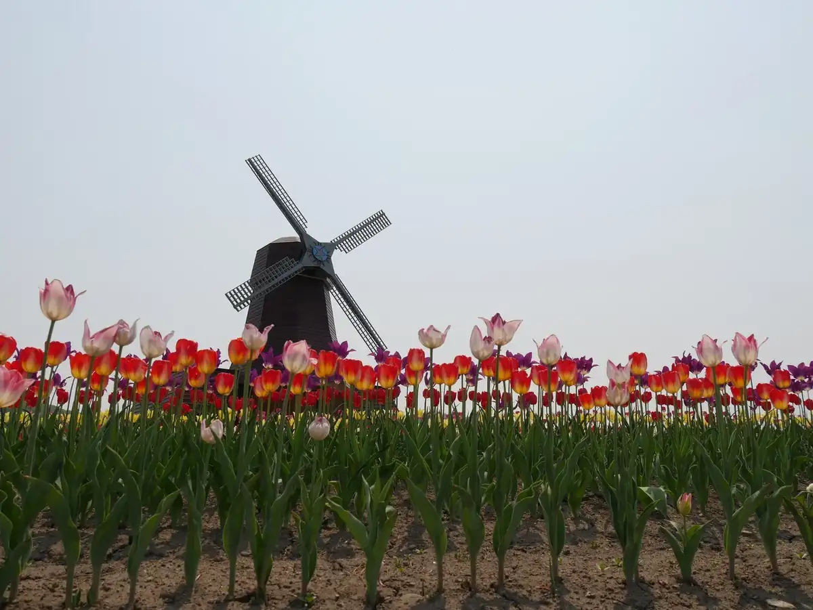
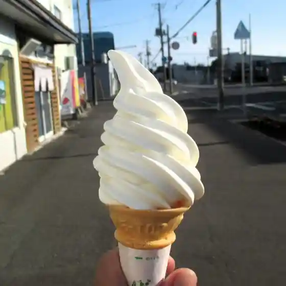
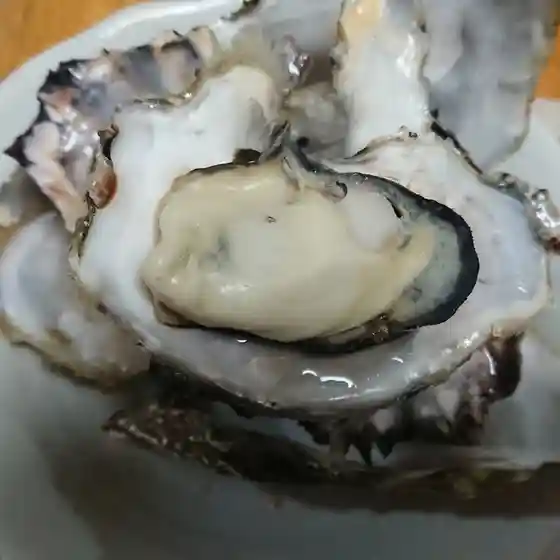
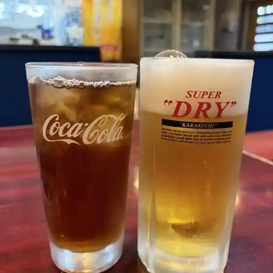
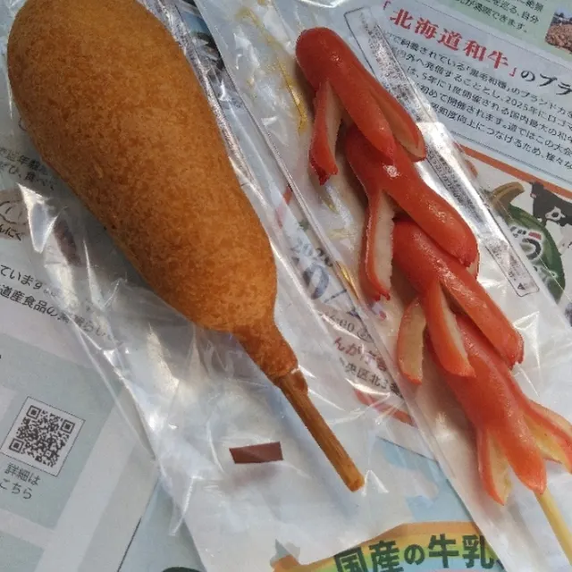
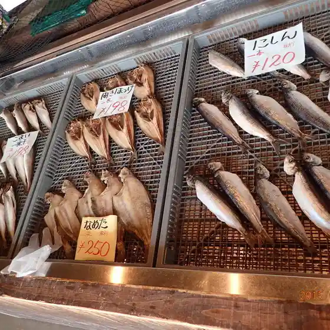
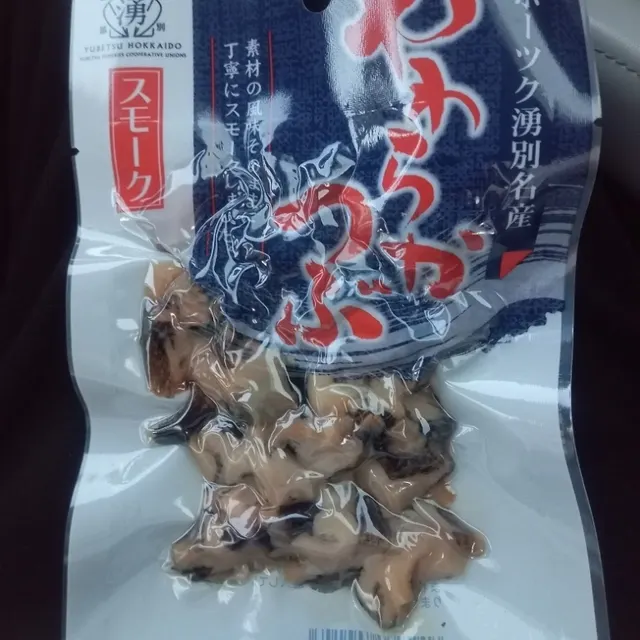
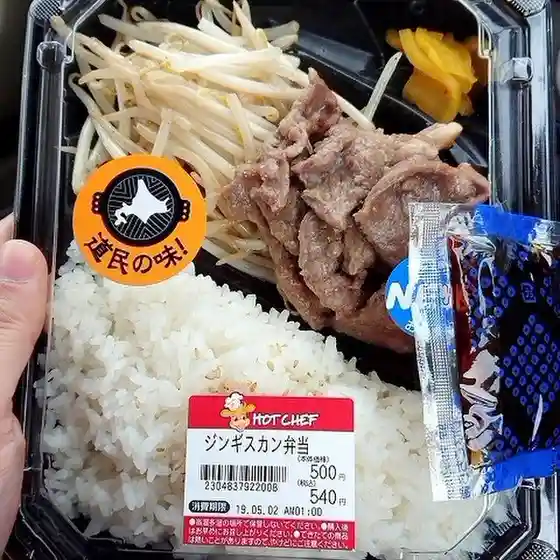
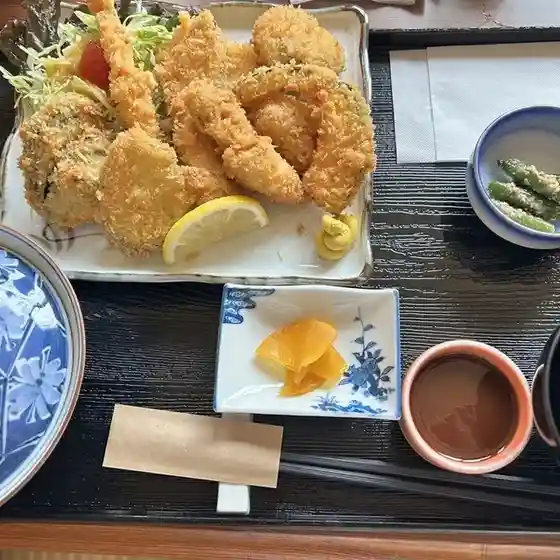

Yubetsu
Yubetsu · Hokkaido
Yubetsu
Highlighted on the Hokkaido map.

Stay
Dining
イタリアン ジェラート

Itarian Jieraato
有限会社 橋本商店

Yuugengaisha Hashimoto Shouten
ビーフランド

Biifurando
LAWSON 上湧別店

Lawson Kamiyuubetsu Mise
西功一商店

Nishi Kouichi Shouten
道の駅 かみゆうべつ温泉チューリップの湯

Michi No Eki Kamiyuubetsu Onsen Chuurippu No Yu
セイコーマート たかだ中湧別店

Seikoomaato Takada Naka Yuubetsu Mise
江戸っ子

Edokko
プラザためひろ
Puraza Tamehiro
野いちご
No Ichigo
味処 こいけ鮨し
Ajidokoro Koike Sushi Shi
ひさご寿司
Hisago Sushi
マルサ斉藤商店
Marusa Saitou Shouten
湧鮮館
Yuu Sen Kan
5DEER
5Deer
チューリップ館
Chuurippu Kan
中華かとう
Chuuka Katou
Aコープ 湧別店
A Koopu Yuubetsu Mise
魚々屋
Sakana (Kurikaesi) Ya
道の駅 愛ランド湧別
Michi No Eki Ai Rando Yuubetsu
つらら
Tsurara
伊勢屋旅館
Iseya Ryokan
みなみかわ製麺
Minamikawa Seimen
NEW HUMBER
New Humber